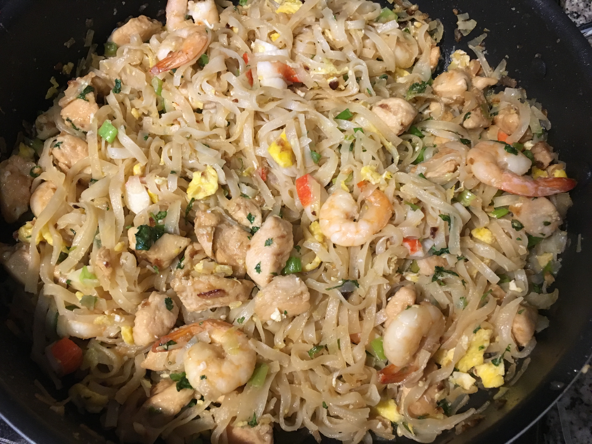

| Other | Meat | Veggie | Fruit |
|---|---|---|---|
| brown sugar | eggs | bean sprouts | |
| bun | any | chives | |
| nuoc mam | garlic | ||
| peanuts | shallot | ||
| tamarind | any |
| instructions |
|---|
| Soak the bun in room temperature water for 1 hour until it is pliable yet firm |
| Make sauce: ratio of 4 tamarind concentrate : 3 brown sugar : 2 nuoc mam : 3 water |
| Heat sauce in microwave so everything is dissolved |
| Cook the meats, remove and set aside |
| Golden minced shallots and garlic |
| Mix bun in sauce in a dry bowl and then add to pan |
| Add additional water and oil as needed to cook bun |
| Make some room in the pan, add eggs |
| Scramble the eggs and mix in with the bun |
| Stir in meats and veggies |